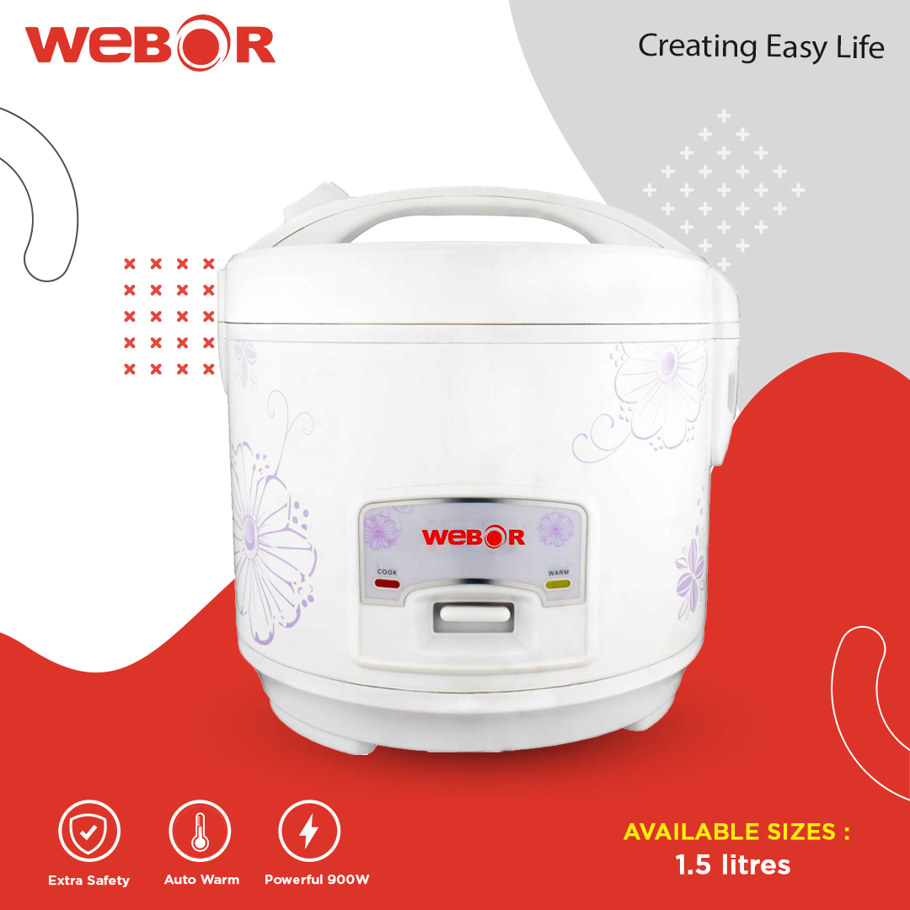

Rice Cookers
Webor WBRC22DRM Electric Rice Cooker
Rs 3,250
Efficient 2.2L rice cooker with automatic keep-warm function for everyday home cooking.
Product Description
The Webor WBRC22DRM Electric Rice Cooker is designed for households that need quick, consistent, and hassle-free rice preparation. Its practical one-touch control helps you cook fluffy rice while reducing kitchen effort during busy routines.
With a family-friendly 2.2 litre capacity and automatic keep-warm support, this rice cooker is a smart choice for daily Nepali kitchens. It is suitable for rice, pulao, and light steaming applications where dependable heat distribution matters.
- 2.2L family-size pot for regular meal preparation
- One-touch cooking control for easy operation
- Automatic keep-warm to maintain serving temperature
- Suitable for rice, pulao, and light steaming
- Reliable choice for modern Kathmandu households
Specifications
Product NameWebor WBRC22DRM Electric Rice Cooker
CategoryRice Cookers
Capacity / Size2.2L
Power700W
Feature HighlightAutomatic keep-warm and one-touch operation
Best ForDaily rice, pulao, steaming and family meal prep
SKUWEB-WBRC22DRM
Warranty1 year warranty
Delivery1-2 business days
PriceRs 3,250